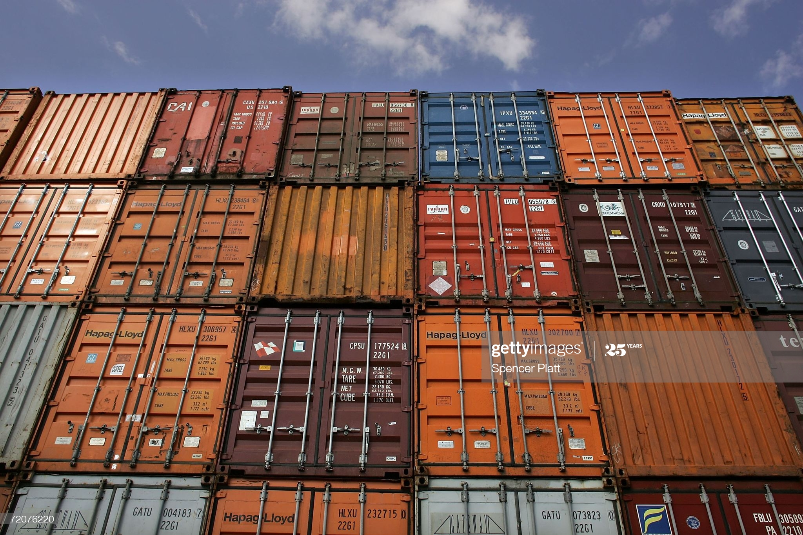

This project's goal is to identify what containerization is, how it works. We will not only learn the concepts of containerization such as virtual packages, but we will also learn what are the well known software that help us manipulate and utilize this concept. After that we will learn in detail on how to create our own repository on one of the software available and how to use it.
Containers are an abstraction at the app layer that packages code and dependencies together. Multiple containers can run on the same machine and share the OS kernel with other containers, each running as isolated processes in user space. Containers take up less space than VMs (container images are typically tens of MBs in size), can handle more applications and require fewer VMs and Operating systems.
Virtual machines (VMs) are an abstraction of physical hardware turning one server into many servers. The hypervisor allows multiple VMs to run on a single machine. Each VM includes a full copy of an operating system, the application, necessary binaries and libraries - taking up tens of GBs. VMs can also be slow to boot.

The container shares the kernel of the host OS with other containers, and the shared part of the OS is read-only. Therefore, the containers are lightweight, so you can deploy multiple containers on a single server. This lets the user to not dedicate an entire server to a single application and having a single OS to maintain. There is less of a need for server space and expanding is much quicker. Therefore, Containerization solves most of the problems for software development and deployment.
The disadvantages of Containerizations are that all containers on a particular host machine must be designed to run on the same kind of OS. Containers based on a different operating system will require a different host. And since the OS is shared, its more vulnerable to any threat since all the containers share the same host. Another disadvantage is that the concept is a bit new, therefore there are still areas that can be a challenging process in terms of adoption and implementation. Containers are an excellent choice for tasks with a much shorter lifecycle.
Before containers were invented, “virtual machine” was the technology for optimizing server capacity. This software was programmed to emulate the hardware of the computer that has a complete operating system. This particular system allowed multiple different OS to run with multiple computers on a single physical server. Each virtual machine images looks like a data folder. They can be moved and copied just like how normal files on your computer would. A user can centralize workloads and run different OS without increasing business expenses.
The disadvantages were that having to ensure all the requisite software, security, enough storage, and resource availability can be more time consuming. As the complexity of tasks increases, so does the need for performance from the system. It results in a substantially higher time required to complete the task. Also, due to the increase in virtual copies and required resources, the software development life cycle is more complex with VMs.
Virtualization is great for supporting application that require operating system’s full functionality when you want to deploy multiple application on one server or have a wide variety of operating systems to manage.
Containers can be a better choice if the biggest priority is efficiency with your tasks. In other words, they are a better choice when you want to minimize the number of servers your using while multiple applications are running. Containers and VMs used together can also provide a great deal of flexibility in deploying and managing app.
The important thing is to identify and examine the pros and cons of these two and utilize them with what you have. In IT strategy, both tools can be reliable in relation to one’s ultimate goals and immediate use cases and team’s work pattern and skillset before selecting a specific path.